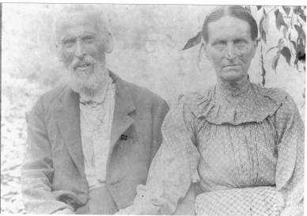
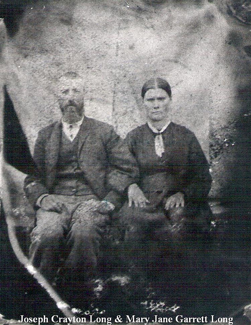
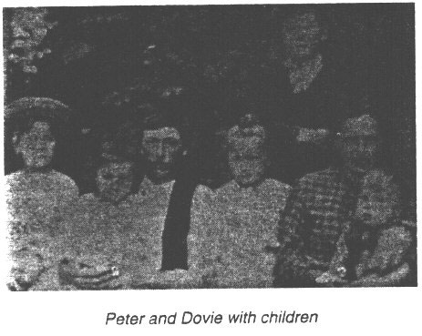
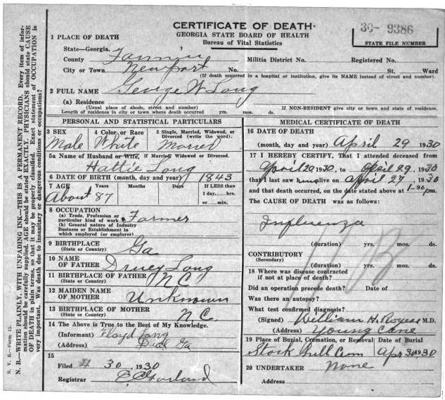

|
Peter Long of Fannin GA > Drury Long of Fannin GA
Drury Long born about 1809 in Morganton, Burke, NC
(tombstone says 1810); Named after his grandfather Drury Mashburn;
He was a soldier in Co E of the 1838 Cherokee removals; He died
May 17, 1877 in Fannin, GA; buried Stockhill Cem, Fannin GA
 "My grandmother
says that her uncle George Long was shown a silvermine by his
grandfather when he was a young boy . That would have been Drury
C. Long or Peter Garrett. The grandfather used the silver to
buy tobacco. I think it may have been Drury Long, because Drury
had loaned money to Peter Garrett, who also was his nephew, to
move to Missouri. Peter had never paid Drury back according to
claims made on his will. Also, the mine was located in an area
nearer to where the Long's were buried. Of course, all the area
is national forest now." "My grandmother
says that her uncle George Long was shown a silvermine by his
grandfather when he was a young boy . That would have been Drury
C. Long or Peter Garrett. The grandfather used the silver to
buy tobacco. I think it may have been Drury Long, because Drury
had loaned money to Peter Garrett, who also was his nephew, to
move to Missouri. Peter had never paid Drury back according to
claims made on his will. Also, the mine was located in an area
nearer to where the Long's were buried. Of course, all the area
is national forest now."
"According to a family tale, at least what I can remember
of it, while Drury and George were serving the CSA, some Home
Guards came through looking for recruits. They burned several
houses, including Drury's house, raped some of the neighborhood
women and killed a boy when he couldn't tell where his father
was. About this time Drury and George was arriving home on furlow.
I'm not sure exactly how it happened, but the neighborhood men
along with Drury and George tracked some of the home guards down
to the river and at about sundown, attacked them. One of the
men was able to hide-out all night in the river, but they waited
on him and the next morning he was caught. He soon gave the names
of the other soldiers and was shot. The other soldiers were tracked
down and killed, the last being the one who killed the boy. I
was told that the man begged them all for mercy, but the boy's
father said "I reckon you aint no better than my boy was"
and he shot him dead right on his front porch. After that, George
and his brothers Peter, Joseph, and William all went together
to Nashville, Tennessee to join the Union Army. One of the brothers
had to be ferried across the Tennessee river on a log by his
brothers because he couldn't swim. Another William Long that
I suspect to have went with them, served in the same unit with
2 of the brothers and is buried in the same community."
married Margaret "Peggy" Garrett, sometime before
the 1840 census; She was born 1 Feb 1808, Morganton, Burke, North
Carolina; She died 6 Sep 1881, Newport, Fannin, Georgia. She
was a daughter of Joseph Garrett and Sarah Stroud of Burke Co
NC
children:
3(i). Peter L. Burter Long (aka Peter A. Long) born
December 1837 in Burke Co NC; Lived in Gilmer Co in 1860; He
served in the Union army Co C 5th TN Cavalry (army records say
age 23 in 1862, born Burke Co NC). He died May 9, 1884; He was
buried at Stockhill Cemetery, Newport, Fannin Co GA.
married Harriett Smart on 13 September 1858 (or 1857) in Fannin
Co GA; Daughter of John M Smart and Mary Jane Killian
children:
4(i). Emily D Long born January 1, 1859; age 1 in 1860
census; Not living with family in 1880 census; She died May 14,
1883, Fannin, GA
4(ii). Drury Washington Long, born 20 August 1862 (tombstone
says 1856), age 8 in 1870, age 18 in 1880 census; age 38 in 1900
census; He lived at Big Ridge, Pickens Co GA in 1920, age 63
(sic); He died April 18, 1947, Gordon Co, GA

Drury Long Jr and wife Mary Puckett
married Mary Puckett on September 11, 1883 in Fannin, GA,
daughter of William Puckett and Elizabeth Wright.
children:
5(vi). Dovie Roselee Long, born August 21, 1884; He
died May 09, 1955, Pickens, GA corrected
death date
5(i). John William Long, born April 05, 1885, Fannin,
GA, ; He died July 12, 1964, Gordon, GA,
5(iv). Dora Elizabeth Long, born July 27, 1890; He
died September 26, 1955
5(iii). Mary Jane Long, born December 26, 1892, Pickens,
GA; He died January 28, 1963,
5(v). Dessie Long, born May 10, 1895; He died July
19, 1920
5(x). Homer Reid Long, born March 28, 1897, GA
5(ix). Margaret Long, born November 11, 1899; He died
January 28, 1987
5(vii). Drury Washington Long, born October 17, 1902,
GA; He died July 04, 1983
5(ii). Hester Lovone Long, born March 20, 1905, Pickens,
GA; He died July 26, 1934, Pickens, GA,
5(viii). Bunyun Monroe Long, born November 11, 1907;
He died July 04, 1997, Gordon, GA,
4(iii). Louisa M. Long born 1866, age 3 in 1870, age
14 in 1880 census; She died August 16, 1957;
4(iv). Josephine Long born October 1868, age 0 in 1870,
age 12 in 1880 census
4(v). Mary A Long, born 1873 in Fannin Co GA, age 7
in 1880 census; She died 12 Dec 1953 in Charlotte NC, married
Redman
4(vi). Margery A Long, born 1876, age 4 in 1880 census
3(ii). Joseph Crayton Long born Nov 15 1839 Burke NC;
age 21 in 1860 Fannin Co census; Served in the Union Army, Co
C 5th TN Cavalry; He died Jun 29, 1905 buried Stockhill Cem.
Fannin GA

Joseph Crayton Long and wife Mary Jane Garrett
married 1) Emeline Grasty on November 05, 1857 in Fannin Co
GA, daughter of Samuel Grasty
married 2) Mary Jane Garrett on January 23, 1870 in Fannin
Co GA, daughter of Peter Garrett and Rebecca Stroud
children:
4(i). Susie Long, born May 15, 1859, GA
4(ii). Margaret Delila Long, born August 20, 1861,
Fannin, GA
4(iii). Joseph C Long, born March 20, 1863, GA
4(iv). Rebecca Louise Long, born February 20, 1871,
Union, GA; She died 1947, GA,
4(v). George Washington Long, born February 25, 1873,
Stock Hill, Fannin, GA; He died December 06, 1933, Stock Hill,
Fannin, GA; Buried Stockhill Cemetery
4(vi). Peter Grayson Long, born November 06, 1875 GA;
He died April 19, 1952, Gilmer, GA

married Dovie Tilly
children:
5(i). Mack Long of Elijay GA
5(ii) Roy Long of Elijay GA
5(iii) Dee Long of Elijay GA
5(iv). Grady Long of Michigan
5(v). Ed Long of Knoxville TN
5(vi). Mary Lee Long married Mullinax of Ellijay GA
5(vii). Annie Long married Hosea of Michigan
5(viii). Mae Belle Long born Feb 7 1905 Fannin Co GA.
Died Oct 5 1998 age 93. Married Dave Kindall. (See obituary at
bottom of this page)
4(vii). Mary Jane Long, born March 09, 1878, Fannin,
GA; She died May 18, 1971, Blairsville, GA
4(viii). Emily Elizabeth Long, born November 03, 1880
GA; She died December 19, 1962
4(ix). Robert Colmon Long, born February 05, 1883 GA;
He died September 17, 1957, Fannin, GA
4(x). Martin Monroe Long, born November 21, 1880 at
Fannin Co GA; He died January 06, 1945 at Blue Ridge Fannin Co
GA
4(xi). Willis Worthman Long, born December 05, 1888;
He died November 07, 1964, Gordon, GA
3(iii). William G. Long born 1843, age 17 in 1860 census;
fought in the Union Army 10th TN Cavalry Co H; He died 27 June
1897; Buried Stockhill Cemetery, Fannin Co GA
married Sarah Bridges on August 19, 1870 in Fannin Co., GA;
She died Jun 06, 1924 in Fannin County, Ga
children:
4(i). Margaret Long, born Oct 1871
4(ii). William H. Long, born Jan 07, 1873, Fannin County,
Ga, died Mar 08, 1970, Lawrence County, TN.
4(iii). Julia A. Long, born about 1876
4(iv). Polly Long, born about 1879
4(v). Drewry Long, born Apr 30, 1882, died Feb 08,
1971
4(vi). Martha Linda Gaines Long, born 1875, d. 1964
4(vii). Junie Long, born Jun 22, 1889
4(viii). Dollie Long, born May 17, 1887, died Oct 15,
1891
4(ix). Hettie Long
3(iv). George Washington Long born February 20, 1845
at Union Co GA; age 15 in 1860 census; He died April 29, 1930,
Dial, Fannin Co GA; Buried Stockhill Cemetery Fannin Co GA

married Harriett Swaney on December 15, 1892 in Fannin, Georgia,
daughter of Joel Stephen Swaney and Sarah Brumbelow.
children:
4(i). Eugene Clifford Long, born September 25, 1893,
Dial, Fannin Co GA; He died September 14, 1967, Calhoun Georgia
4(ii). Collins Long, born 1894.
4(iii). Floyd Thurston Long, born May 05, 1896, Dial,
Fannin Co GA (another source says b. 15 May 1895); He died January
14, 1967, Gilmer Co Georgia,
4(iv). Nettie Daisy Long, born August 24, 1898, Dial,
Fannin GA; She died March 01, 1978, Georgia
4(v). Tamer Long, born March 24, 1900, Dial, Fannin
Co Georgia; She died April 04, 1928, Georgia
4(vi). Paul Long, born June 30, 1901; He died January
7, 1902; Buried Stockhill Cemetery, Fannin Co GA
4(vii). Simon Lewis Long, born 1903, Dial, Fannin Co
GA; He died April 01, 1949, Blue Ridge Fannin Co GA (another
source says d. 30 Mar 1952 at Fulton Co GA)
4(viii). Doctor Long, born November 11, 1905; He died
Mar. 3, 1906; Buried Stockhill Cemetery, Fannin Co GA
4(ix). Roy Blufford Long, born February 05, 1908, Dial,
Fannin Co GA; He died February 14, 1967, Georgia
4(x). Blaine Long. born December 11, 1910 in Dial,
Georgia; died August 17, 2003 in Morganton, Georgia. He married
Caroline Trophie Weaver June 15, 1937 in Blue Ridge, Georgia,
daughter of William Wesley Weaver and Nancy Jane Champion. She
was born May 28, 1919 in Gilmer County, Georgia, and died December
29, 1998 in Ringgold, Ga
3(v). Margaret Long born 1849, GA; age 10 in 1860 census;
She died January 17, 1938, GA; married______Gee; She lived with
her parents in 1870 census, with infant daughter Adeline Gee
3(vi). Drury (Robert) Long born 1852/1854, (Drury age
8 in 1860 census, Robert age 16 in 1870 census), nothing more
known
3(vii). Shadrack Long born 1859, Tennessee, age 9 in
1870 census; nothing more known
|